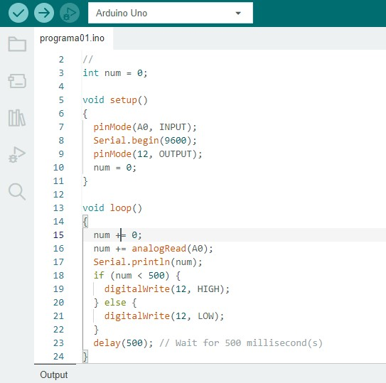

O C++ está presente em sistemas operacionais, jogos e até softwares de gerenciamento de energia. Conheça tudo sobre essa linguagem de programação.
O C++ é uma linguagem de programação que desempenha um papel no desenvolvimento de software, destacando-se por sua eficiência. A linguagem está entre as dez mais usados do mundo, sendo adotado por 22% das pessoas desenvolvedoras, de acordo com dados do Statista.
O núcleo do sistema operacional, conhecido como kernel, é em grande parte escrito em C++. Isso permitiu o desenvolvimento de código de alto desempenho, fundamental para a responsividade e eficiência, com um controle preciso sobre os recursos, incluindo gerenciamento de memória e manipulação direta de hardware.
Além disso, o C++ é utilizado em vários setores, como desenvolvimento de sistemas operacionais, jogos e software de alto desempenho, hardware, redes, sistemas de e-mail,sites de varejo, projetos de comunicação, aviação e até gerenciamento de energia.
A seguir em baixo, ilustraremosuma imagem de códigos na IDE do Arduíno
 ArduínoAbaixo disponível um texto ilustrado do código.
// C++ code // int num = 0; void setup() { pinMode(A0, INPUT); Serial.begin(9600); pinMode(12, OUTPUT); num = 0; } void loop() { num += 0; num += analogRead(A0); Serial.println(num); if (num > 500) { digitalWrite(12, HIGH); } else { digitalWrite(12, LOW); } delay(500); // Wait for 500 millisecond(s) }